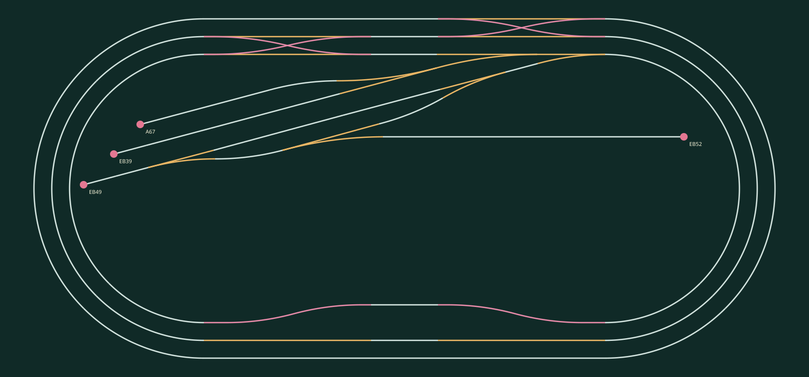

Preparing the 3D railway…

The track plan and 3D view share the same geometry. Reconstructed component profiles and physical clearances are documented in the technical report.
Train controls: select a train from the tabs or its console. The three most recently selected trains have independent speed, direction, stop and light controls. Add train places a fourth locomotive in the east siding when the insertion point is clear. Hidden trains keep running. STOP ALL stops every train, including hidden ones.
Miniatures: each locomotive image matches its model. The red dot on each miniature track plan marks that locomotive. Click the map to center the main camera on it.
Camera: choose Overview, Station, Freight yard or Follow train. Use Orbit or Pan with a mouse or one finger, and +/−, the wheel or a pinch gesture to zoom. Home restores the standard view. A manual gesture stops camera following.
Next Switch: the panel at the top right shows the next switch and distance along the track. Its diagram follows the actual connections and switch state. Minimize it at any time. Route shows the predicted path for 15 seconds; click again to hide it. This preview does not indicate a clear or authorized route.
Switches: the two WX310 units transfer trains between loops. The yard has two entrances, four sidings and a runaround. Occupied switches and switches with an approaching train are protected. Runaround maneuvers require reversing on the common leads.
Coupling: stop before using the link −/+ buttons to uncouple the last wagon or couple a nearby wagon on the same track. Acceleration and braking are gradual; reversing preserves the wagon order. Space stops the selected train when a control does not have keyboard focus.
Graphics: Auto adjusts quality; Cinema adds ambient occlusion and other effects. Kenney Train Kit 1.1 models are stylized CC0 assets by Kenney, Guus Vermeulen and Tony Schaer, rather than specific DB locomotive replicas.
This is an independent simulation. It sends no commands to a real Z21 controller.